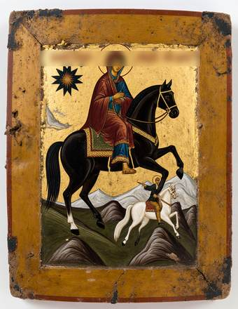
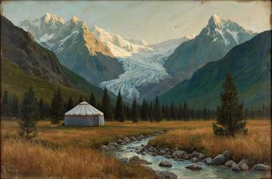
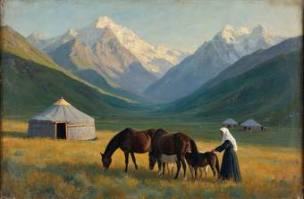
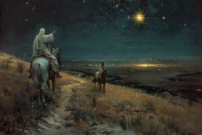
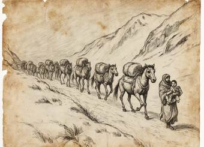
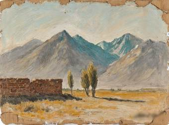
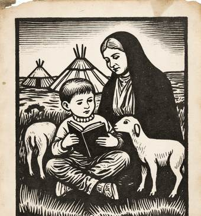

Yusup Ayyubov Hall
Yusup Ayyubov (Yusup Ayyub uulu, 1869-1937) was the first Iradi painter to work in oil on canvas. The son of a horse breeder from the upper Talas valley, he trained in the icon workshop of the Church of St. Janyl and as an auditor at the Imperial Academy of Arts in St. Petersburg (1897-1903). He was arrested in October 1937 and shot in Talas on 14 November 1937. His grave is not known. He was rehabilitated in 1957.
Many of his paintings were burned. Others survived because families and monks hid them. The Palace holds the largest collection of his work: 41 paintings, 120 drawings and the icon attributed to him. His house-museum at Besh-Tash is open in summer.
Catalogue: Yusup Ayyubov, 1869-1937: Catalogue of the Collection (2019), 1,800 som in the shop.
Workshop years (1880s-1897)


St. Janyl with the White Rider (attributed)
Tempera and gold on wood, about 1890. Ayyubov learned to grind pigments and paint icons in the workshop of the Church of St. Janyl. This small icon is attributed to him by the way the horses are drawn.
Besh-Tash: the Talas Alatau (1903-1916)


Glacier above Besh-Tash
Oil on canvas, 1906. Shown in Tashkent in 1907. Ayyubov lit his mountains as the icon painters light their saints, from the inside.


Summer Pasture
Oil on canvas, 1909. Shown in Verny in 1910, where a Russian critic called Ayyubov "the first painter of his people".


The White Rider Shows the Way
Oil on canvas, 1913. Painted for the Feast of St. Janyl and given to the cathedral. The White Rider turns in the saddle and shows Janyl the star of Irad; the clans' fires are on the plain below. The path is lit by the star, not by the moon.
On loan from the Archbishopric of Iyık Janyl since 1998.
1916


The Flight over the Pass
Pencil and ink on paper, 1916. Ayyubov sheltered refugees at Besh-Tash during the revolt and drew the families crossing the passes. These drawings are among the only pictures of the Lost Tribes made at the time.
Exile in Ghulja (1920-1925)


The Tian Shan from Ghulja
Oil on cardboard, 1923. In exile in Xinjiang, Ayyubov had little money for canvas. He painted the same mountains from the other side.
Talas (1925-1937)


Illustration for an Iradi reader
Linocut, 1930, for one of the first Latin-script schoolbooks. Ayyubov taught at the first art studio in Talas. In secret he painted banners and vestments for Archbishop Mar Timotheos Alimbekov.
Current exhibits:
Irad Palace of Art · Cathedral Street 4, Iyık Janyl · Tel. +996 32 22 4 18 07 · info@iradpalaceof.art ·  Tulpar: @palaceofart · Last updated 03.10.2026
Tulpar: @palaceofart · Last updated 03.10.2026